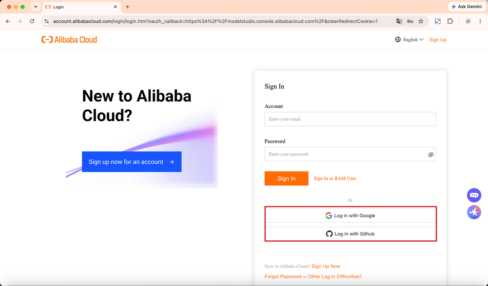
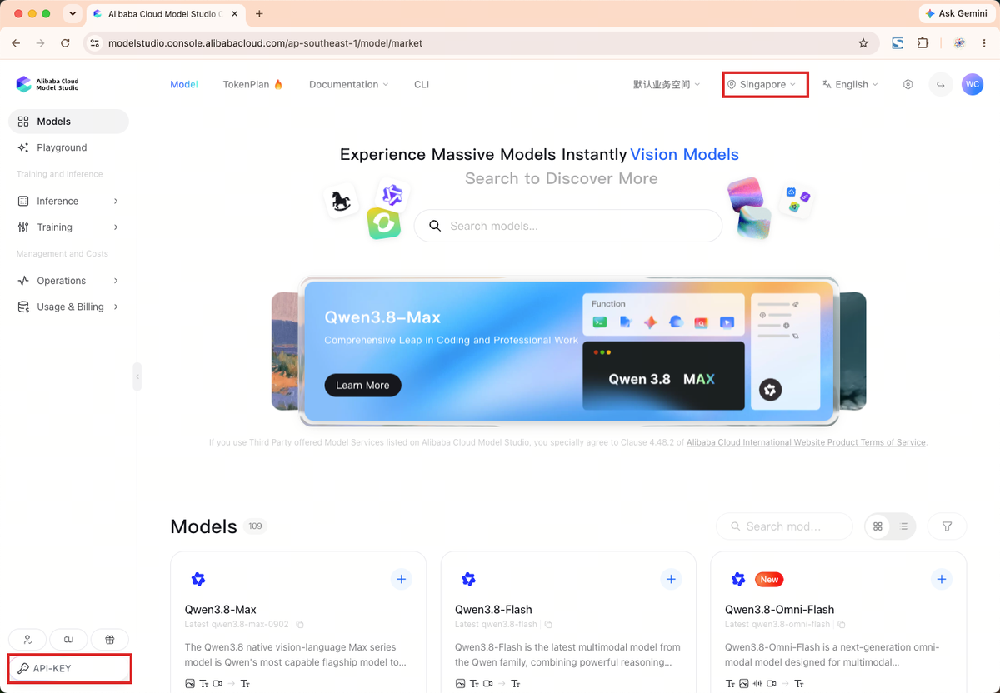
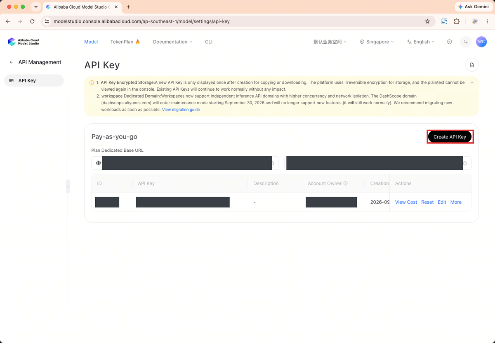
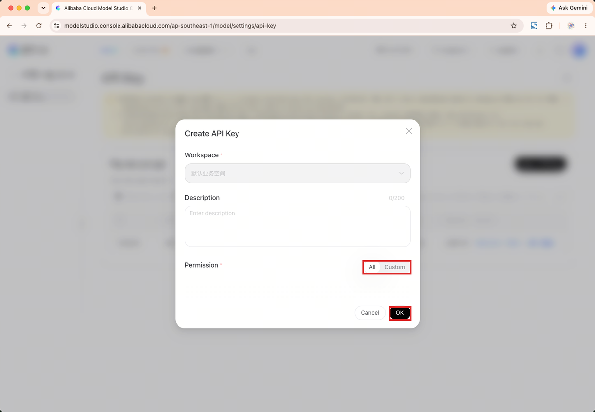
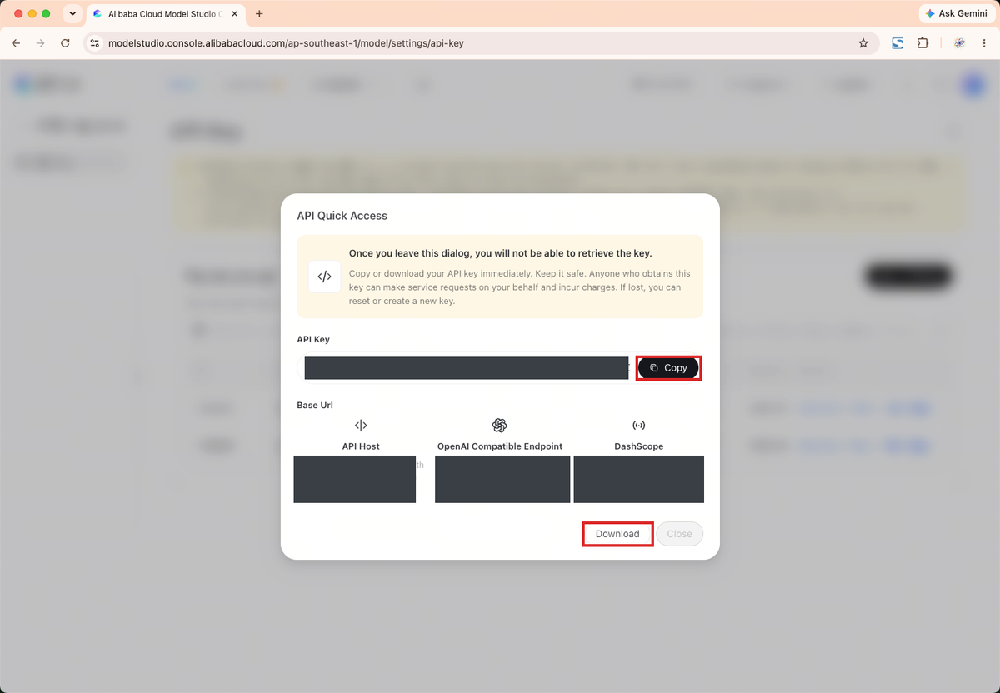
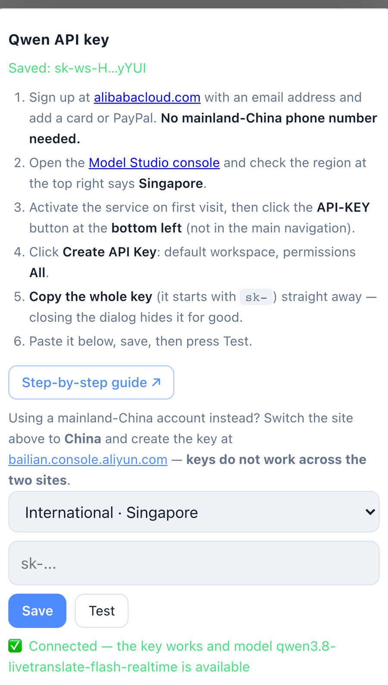

申请通义千问 API Key
Getting a Qwen API key
大约十分钟。全程在电脑浏览器里完成，最后一步回到手机。
About ten minutes. Do it in a desktop browser; only the last step is on the phone.
这个 App 不含翻译额度，它用你自己的账号直连阿里云百炼，费用由阿里云按用量向你收取。 语音不经过我们的服务器。
The app includes no translation credit. It talks to Alibaba Cloud Model Studio with your own account, and Alibaba Cloud bills you for what you use. Your speech never passes through our servers.
两件事先记住，出错基本都出在这两处：Key 必须建在 新加坡（Singapore）区，别的区建的 Key 这个 App 用不了； Key 创建后只完整显示一次，弹窗关掉就再也看不到。
Two things to keep in mind — nearly every failure comes from one of them. The key must be created in the Singapore region; keys from other regions will not work here. And the key is shown in full only once — once you close that dialog it cannot be read again.
-
注册阿里云国际站账号
Create an Alibaba Cloud account
打开 alibabacloud.com 注册。用邮箱即可，不需要中国大陆手机号。
Sign up at alibabacloud.com. An email address is enough — no mainland-China phone number is required.
也可以直接用 Google 或 GitHub 账号登录，省掉填表。
You can also sign in with a Google or GitHub account and skip the form.
注册后需要绑定一张信用卡或 PayPal 才能开通服务。绑卡本身不扣费，按实际用量计费。
You will need to add a credit card or PayPal before services can be activated. Adding it does not charge you anything; you are billed for actual usage.

-
把区域切到新加坡
Switch the region to Singapore
打开百炼控制台： modelstudio.console.alibabacloud.com/ap-southeast-1， 确认右上角的区域是 Singapore。这个链接已经指向新加坡，但登录过程有时会把你带回默认区域，所以要看一眼。
Open the Model Studio console at modelstudio.console.alibabacloud.com/ap-southeast-1 and check that the region at the top right reads Singapore. The link points there already, but signing in sometimes returns you to a default region, so it is worth a look.

右上角是区域，左下角那个 API-KEY 就是下一步要点的入口——它不在左侧主导航里。 The region sits at the top right. The API-KEY button at the bottom left is where you go next — it is not in the main navigation. -
开通百炼服务
Activate Model Studio
第一次进入会提示开通，同意条款后点开通即可。已经开通过的账号看不到这一步，直接跳到下一步。
The first visit asks you to activate the service: accept the terms and confirm. If your account is already activated you will not see this screen — go straight to the next step.
-
找到 API Key 页面
Open the API Key page
点控制台左下角的 API-KEY 按钮。它是个单独的胶囊按钮， 不在上面那排主导航里，第一次找容易找不到。
Click the API-KEY button at the bottom left of the console. It is a separate pill-shaped button rather than an item in the main navigation, which makes it easy to miss the first time.

到了这一页，点右边的 Create API Key。 Once you are on this page, click Create API Key on the right. -
创建 API Key
Create the key
点 Create API Key。工作区选默认的那个，权限选 All， 描述可以留空，然后确定。
Click Create API Key. Pick the default workspace, set permissions to All, leave the description empty if you like, and confirm.

-
立刻复制整串 Key
Copy the whole key, right away
Key 会以
sk-开头，很长——一定要复制完整的一整串， 漏掉尾巴几个字符的表现和填错一样，都是连不上。用弹窗里的复制按钮最稳。The key starts with
sk-and is long — copy all of it. A key missing its last few characters fails exactly like a wrong one. Use the copy button in the dialog.弹窗里还有个 Download，会把 Key 存成文件，比只放在剪贴板保险。
The dialog also offers Download, which saves the key to a file — safer than relying on the clipboard alone.
关掉这个弹窗就再也看不到完整 Key 了。万一没存下来，删掉重建一把即可，不影响账号。
Once this dialog closes the full key is gone. If you lose it, just delete that key and create another — nothing else is affected.

图中的 Key 和专属域名已打码。 The key and the dedicated domains are blacked out in this screenshot. -
填进 App，点「测试」
Paste it into the app and press Test
回到手机：设置 → 通义千问 API Key。站点保持 国际站 · 新加坡，把 Key 粘进输入框，点保存，再点测试。 看到绿色的「连接成功」就完成了。
Back on the phone: Settings → Qwen API key. Leave the site on International · Singapore, paste the key, press Save, then Test. A green “connected” message means you are done.
最后到翻译后端里选中「通义千问」，关掉设置，选好语言对就可以开始了。
Finally pick Qwen under Backend, close settings, choose a language pair and start.

绿色那行就是成功的样子。 The green line is what success looks like.
连不上怎么办
If it will not connect
提示 Key 无效——九成是区域不对。回控制台看右上角是不是 Singapore； 不是的话切过去重新建一把，别的区的 Key 换不过来。也顺便确认粘贴时没漏掉结尾。
“Invalid key” — nine times out of ten the region is wrong. Check that the console says Singapore at the top right; if not, switch and create a new key, because a key cannot be moved between regions. Also make sure nothing was cut off the end when pasting.
提示无权调用该模型——账号还没开通百炼，或者没有可用余额。回控制台看一眼。
“Not allowed to call the model” — the account has not activated Model Studio yet, or has no usable balance. Check in the console.
提示连接超时——手机网络到
dashscope-intl.aliyuncs.com 不通。换个网络（比如从公司 Wi-Fi 切到蜂窝数据）再试。
“Connection timed out” — the phone cannot reach
dashscope-intl.aliyuncs.com. Try a different network, for example cellular instead of office Wi-Fi.
想先看看效果？不用 Key：设置 → 翻译后端 → 演示模式， 语言对选「中英」，点「开始传译」。不联网、不采集麦克风。
Want to see it first? No key needed: Settings → Backend → Demo mode, pick the Chinese ⇄ English pair and press Start. It uses no network and no microphone.
还是不行的话写信到 winer632@qq.com， 附上机型、iOS 版本和「测试」按钮给出的那句提示，排查会快很多。不要把 Key 发给我们。
Still stuck? Write to winer632@qq.com with your device, iOS version and the exact message the Test button gave — that makes it much quicker. Please do not send us your key.